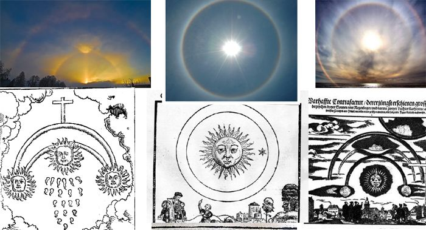

1561-04-14, Germany: dozens of UFOs engaged in aerial combat over nuremberg → this case is solved

Summary
This is the famous case of a group of spaceships on a woodcut print depicting a celestial apparition in Germany in 1561.
There is an online article that explains the identity of this group of spaceships in terms of a phantom sun. While this is certainly convincing, there are other explanations (large black arrow-like objects, spheres, and smoke on the ground) that cannot be explained by the phantom sun alone.
These descriptions are rationally explained below. This, in my judgment, makes the case fully closed.
article hisotry
- (2020-03-23) Minor additions. - (2017-03-29) Changed formatting of headings. - (2015-02-23) Addition about the identity of UFOs other than arcs (black giant spaceships, black and red spheres, cylinders, etc.). - (2014-07-19) Added how the source article interprets the surrounding UFOs. (still in process) - (2014-07-06) Added an article saying that the identity of these UFOs has almost been determined. - (2012-02-04) Createsummary
- April 14, 1561, over Nuremberg, Germany. At sunrise, people in the city witnessed a battle between many strange objects in the sky. A woodcut print (below) of this scene survives.source
http://www.hidden-truth.org/aliens/1561-spaceship-battle-above-nuremberg-germany-1566-sighting-of-large-group-of-alien-spaceships-over-switzerland-1697-two-glowing-wheels-over-hamburg-germany.htm http://www.educatinghumanity.com/2012/02/battle-over-nuremberg-germany-1561.html (2012-02-04 end)
(2014-07-06 begin) - The video below is a good example, but since the video may disappear, I cite the photos and diagrams from the source article below. - The following is only a brief summary of the main points of the source article's claims, as I think a detailed explanation is unnecessary. - The woodblock prints are not fabricated, and the date and creator of the woodblock prints are correct. - The woodblock prints served as a kind of newspaper at the time. The incident that caused a great commotion when the aurora occurred is expressed in the picture and text below, in which the sky is on fire.- The UFOs are actually phantom suns. The best evidence for this is the figure below. Note the arc indicated by the red arrow.

 (2014-07-06 end)
(2014-07-19 begin) - Assuming the identity of the two arcs intersecting the sun in the woodcut is as above. - If the identity of the two arcs intersecting the sun in the woodblock print is as shown above, how do they explain the other figures? The source article roughly explains the other figures as follows: - Cylinder-shaped objects, balls, and cross-shaped objects → Vertical linear or spherical phantoms surrounding the sun (a slightly painful explanation...haha) - Black spaceship-like objects appearing above the horizon → Situations like the one in the photo below (black linear shadow in the lower center, etc.) looked like spaceships. - The object crashed and burned on the ground in the lower right of the woodblock print → The situation as shown in the photo below (e.g., the scene in the upper center) looked like a burning object.
video
source
http://ancientaliensdebunked.com/nuremburg-ufo-battle-debunked/comment
- The explanation for the arc part is compelling. The explanation of the above source article is a bit unreasonable as to the identity of the UFOs other than the arc (a huge black spaceship, black and red spheres, cylinders, smoke from a crashed object on the ground, etc.). - Some blog articles (below) deny that the above explanation is convincing and claim that they are pictorial representations of religious conflicts as motifs. The theory, briefly introduced below, is that the UFO swarms were engaged in a religious conflict, and that the smoke that crashed on the ground was smoke from a book burning due to the conflict.I saw the "debunked" feature when I was writing up my piece, Gilles. And I discarded the Menzelian explanation of weird atmospherics. It's not a better explanation. Ref ： http://ufocon.blogspot.jp/2014/06/those-15611566-woodcuttings-are.html- I think the "religious conflict" theory above is too poorly supported and less convincing than the phantom day theory. - I think the identity of UFOs other than arcs (giant black spaceships, black or red spheres, cylinders, crashed objects on the surface of the earth, etc.) can be interpreted differently. That is... (2014-07-19 end)
(2015-02-23 begin) - I realized that I had neglected this article for more than half a year. It is not that I had forgotten about it, but I had put it off because I was too lazy to write a lengthy explanation of a mystery that I personally consider to have been solved. - Now, I am satisfied with the phantom day theory as far as the arc part is concerned. I will briefly explain my interpretation of the remaining non-arc UFOs (black giant spaceships, black and red spheres, cylinders, etc.) as follows. - First of all, in order to solve this mystery, it is necessary to understand under what circumstances this woodcut was made. According to the source article, the circumstances were as follows: - The person who created this woodblock print was not an eyewitness to this incident. The artist gathered testimonies from many people who witnessed the incident, and then gathered those testimonies to create a woodblock print. - The witnesses witnessed this scene for about one hour. - The woodblock prints were the publishing business of the time, and they served the function of mass media, so to speak, to some extent. Therefore, just like today's mass media, they must have collected only the most bizarre testimonies or led the public to more interesting testimonies in order to attract the public's attention and to make money by selling large quantities of woodblock prints. - What is most remarkable here is that the witnesses watched the slowly changing scene of the phantom sun for about an hour. Imagine this situation, and the mystery becomes clear. - The issue is not the state of mind(example: speculation of some sort of hypnotic state of mind) of the witnesses who kept seeing the phantom sun. It is about the naked eye. - What would happen to the naked eye if it were to continue looking at the glaring sun and the surrounding phantom sun for an hour or so? When you look away, what do you see on the part of your retina that used to reflect the sun or the phantom sun? - They were the true nature of the huge black spaceships, black and red spheres, cylinders, and smoke from objects that had crashed on the ground. In other words, they were the afterimages of retinas that had been staring at the sun or phantom sun for a long time. (2015-02-23 end)
(2020-03-23 begin)Preface
- This was discussed in a recent article on UFOs engaging each other. The article quoted a very specific sighting of a UFO, which I will record for reference. - The author of the article, Brent Swancer, concluded that it is almost impossible to determine the true nature of this UFO.In later centuries it has come to be seen as perhaps some sort of atmospheric phenomena such as a sundog, flying swarms of insects, clouds, birds, a sensationalized tall tale, or even an actual mass battle between UFOs. It is likely we will never know, considering how lost to time the report is, but it is definitely curious.citation
At first there appeared in the middle of the sun two blood-red semi-circular arcs, just like the moon in its last quarter. And in the sun, above and below and on both sides, the color was blood, there stood a round ball of partly dull, partly black ferrous color. Likewise there stood on both sides and as a torus about the sun such blood-red ones and other balls in large number, about three in a line and four in a square, also some alone. In between these globes there were visible a few blood-red crosses, between which there were blood-red strips, becoming thicker to the rear and in the front malleable like the rods of reed-grass, which were intermingled, among them two big rods, one on the right, the other to the left, and within the small and big rods there were three, also four and more globes. These all started to fight among themselves, so that the globes, which were first in the sun, flew out to the ones standing on both sides, thereafter, the globes standing outside the sun, in the small and large rods, flew into the sun. Besides the globes flew back and forth among themselves and fought vehemently with each other for over an hour. And when the conflict in and again out of the sun was most intense, they became fatigued to such an extent that they all, as said above, fell from the sun down upon the earth ‘as if they all burned’ and they then wasted away on the earth with immense smoke. After all this there was something like a black spear, very long and thick, sighted; the shaft pointed to the east, the point pointed west. Whatever such signs mean, God alone knows. ref: Bizarre Cases of UFOs Dogfighting Other UFOs | Mysterious Universe - https://mysteriousuniverse.org/2020/03/bizarre-cases-of-ufos-dogfighting-other-ufos/comment
- I read this quoted passage and it does nothing to change the conclusion I reached 5 years ago (2015-02-23). I think it is rather reinforcing material. (2020-03-23 end)
Thanks
Translated with www.DeepL.com/Translator
(2022-08-22 translation)
First published article (Japanese)
1561年4月14日早朝、ドイツ ニュルンベルク上空で数十の UFO が空中戦（全体＋追加） (2020-03-23)